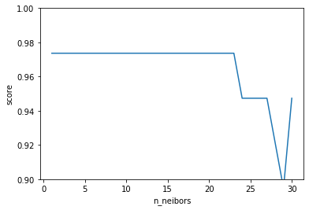
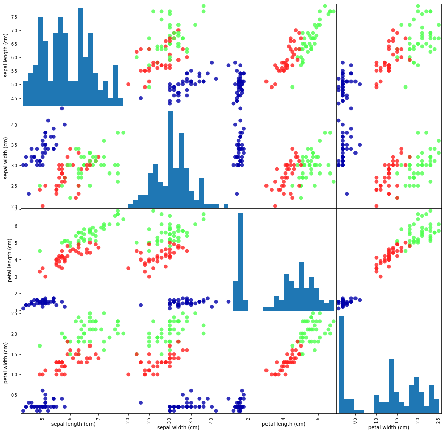

動画リンク
https://www.youtube.com/watch?v=4Vk1UhRDB34&list=PLdG31GUo-My_YlVF8BClMDBaJ0IJyEFjS&index=3&t=0s
k近傍法
k近傍法は、ユークリッド距離などを用いて未知のデータを、いくつか存在するクラスに割り当てるアルゴリズムです。
つまり、いわゆる教師あり学習に入ります。
未知の特徴ベクトル$x$がどの分類クラス$y’$かを予測するために
すでに教師あり学習で学んだ$N$個のデータと距離を比較します。
そして、一番近い$K$個のラベルを取り出し、そのうち、多数決で$x$のラベルを推測します。
$K$がある程度小さいほど精度は増しますが、外れ値のようなノイズに左右されやすくなります。
また、$K$が大きくなると、平均的には良いですが、境界値などで他のクラスに多く引っ張られるため精度が下がります。
適切な$K$を自分で探す必要があります。
メリット・デメリット
- メリット
- 理解しやすい
- 単純だが意外とうまくいく
- デメリット
- 計算量が次元の増加にともなってでかくなる
実装
mglearnを先にインストールしておきます。
Jupyter Notebookでは!をつけるとコマンドを利用することができます。
1 | !pip install mglearn |
Requirement already satisfied: mglearn in /opt/conda/lib/python3.7/site-packages (0.1.7)
Requirement already satisfied: scikit-learn in /opt/conda/lib/python3.7/site-packages (from mglearn) (0.21.3)
Requirement already satisfied: matplotlib in /opt/conda/lib/python3.7/site-packages (from mglearn) (3.1.1)
Requirement already satisfied: imageio in /opt/conda/lib/python3.7/site-packages (from mglearn) (2.6.1)
Requirement already satisfied: pillow in /opt/conda/lib/python3.7/site-packages (from mglearn) (6.2.1)
Requirement already satisfied: pandas in /opt/conda/lib/python3.7/site-packages (from mglearn) (0.25.3)
Requirement already satisfied: cycler in /opt/conda/lib/python3.7/site-packages (from mglearn) (0.10.0)
Requirement already satisfied: numpy in /opt/conda/lib/python3.7/site-packages (from mglearn) (1.17.3)
Requirement already satisfied: joblib>=0.11 in /opt/conda/lib/python3.7/site-packages (from scikit-learn->mglearn) (0.14.0)
Requirement already satisfied: scipy>=0.17.0 in /opt/conda/lib/python3.7/site-packages (from scikit-learn->mglearn) (1.3.2)
Requirement already satisfied: kiwisolver>=1.0.1 in /opt/conda/lib/python3.7/site-packages (from matplotlib->mglearn) (1.1.0)
Requirement already satisfied: python-dateutil>=2.1 in /opt/conda/lib/python3.7/site-packages (from matplotlib->mglearn) (2.8.1)
Requirement already satisfied: pyparsing!=2.0.4,!=2.1.2,!=2.1.6,>=2.0.1 in /opt/conda/lib/python3.7/site-packages (from matplotlib->mglearn) (2.4.5)
Requirement already satisfied: pytz>=2017.2 in /opt/conda/lib/python3.7/site-packages (from pandas->mglearn) (2019.3)
Requirement already satisfied: six in /opt/conda/lib/python3.7/site-packages (from cycler->mglearn) (1.13.0)
Requirement already satisfied: setuptools in /opt/conda/lib/python3.7/site-packages (from kiwisolver>=1.0.1->matplotlib->mglearn) (42.0.2.post20191201)sklearnのtrain_test_splitは、データを訓練データとテストデータに分割してくれます。
パラメータによっては元のデータのバランスを崩さないようにデータを分割してくれます。
1 | %matplotlib inline |
irisと呼ばれるsklearnのデータセットを利用します。
irisは3種類の花を分類するデータセットです。
額の大きさなど4つの特徴量が存在し、0,1,2の3クラスに高精度に分類することが目的です。
1 | from sklearn.datasets import load_iris |
1 | print(iris.DESCR) |
.. _iris_dataset:
Iris plants dataset
--------------------
**Data Set Characteristics:**
:Number of Instances: 150 (50 in each of three classes)
:Number of Attributes: 4 numeric, predictive attributes and the class
:Attribute Information:
- sepal length in cm
- sepal width in cm
- petal length in cm
- petal width in cm
- class:
- Iris-Setosa
- Iris-Versicolour
- Iris-Virginica
:Summary Statistics:
============== ==== ==== ======= ===== ====================
Min Max Mean SD Class Correlation
============== ==== ==== ======= ===== ====================
sepal length: 4.3 7.9 5.84 0.83 0.7826
sepal width: 2.0 4.4 3.05 0.43 -0.4194
petal length: 1.0 6.9 3.76 1.76 0.9490 (high!)
petal width: 0.1 2.5 1.20 0.76 0.9565 (high!)
============== ==== ==== ======= ===== ====================
:Missing Attribute Values: None
:Class Distribution: 33.3% for each of 3 classes.
:Creator: R.A. Fisher
:Donor: Michael Marshall (MARSHALL%PLU@io.arc.nasa.gov)
:Date: July, 1988
The famous Iris database, first used by Sir R.A. Fisher. The dataset is taken
from Fisher's paper. Note that it's the same as in R, but not as in the UCI
Machine Learning Repository, which has two wrong data points.
This is perhaps the best known database to be found in the
pattern recognition literature. Fisher's paper is a classic in the field and
is referenced frequently to this day. (See Duda & Hart, for example.) The
data set contains 3 classes of 50 instances each, where each class refers to a
type of iris plant. One class is linearly separable from the other 2; the
latter are NOT linearly separable from each other.
.. topic:: References
- Fisher, R.A. "The use of multiple measurements in taxonomic problems"
Annual Eugenics, 7, Part II, 179-188 (1936); also in "Contributions to
Mathematical Statistics" (John Wiley, NY, 1950).
- Duda, R.O., & Hart, P.E. (1973) Pattern Classification and Scene Analysis.
(Q327.D83) John Wiley & Sons. ISBN 0-471-22361-1. See page 218.
- Dasarathy, B.V. (1980) "Nosing Around the Neighborhood: A New System
Structure and Classification Rule for Recognition in Partially Exposed
Environments". IEEE Transactions on Pattern Analysis and Machine
Intelligence, Vol. PAMI-2, No. 1, 67-71.
- Gates, G.W. (1972) "The Reduced Nearest Neighbor Rule". IEEE Transactions
on Information Theory, May 1972, 431-433.
- See also: 1988 MLC Proceedings, 54-64. Cheeseman et al"s AUTOCLASS II
conceptual clustering system finds 3 classes in the data.
- Many, many more ...150個のデータと4次元の特徴量が存在します。
1 | print(iris.data.shape) |
(150, 4)1 | print(iris.data[0]) |
[5.1 3.5 1.4 0.2]1 | print(iris.target_names) |
['setosa' 'versicolor' 'virginica']targetに分類が格納されています。
$X, Y$を分類するのが通例のようです。
1 | print(iris.target.shape, iris.target) |
(150,) [0 0 0 0 0 0 0 0 0 0 0 0 0 0 0 0 0 0 0 0 0 0 0 0 0 0 0 0 0 0 0 0 0 0 0 0 0
0 0 0 0 0 0 0 0 0 0 0 0 0 1 1 1 1 1 1 1 1 1 1 1 1 1 1 1 1 1 1 1 1 1 1 1 1
1 1 1 1 1 1 1 1 1 1 1 1 1 1 1 1 1 1 1 1 1 1 1 1 1 1 2 2 2 2 2 2 2 2 2 2 2
2 2 2 2 2 2 2 2 2 2 2 2 2 2 2 2 2 2 2 2 2 2 2 2 2 2 2 2 2 2 2 2 2 2 2 2 2
2 2]1 | X = iris.data |
pandasのcolumnsに何も設定しないと、通常0,1,..のように連番が振られますが
文字列を指定できます。
1 | pd.DataFrame(X, columns=iris.feature_names).head() |
| sepal length (cm) | sepal width (cm) | petal length (cm) | petal width (cm) | |
|---|---|---|---|---|
| 0 | 5.1 | 3.5 | 1.4 | 0.2 |
| 1 | 4.9 | 3.0 | 1.4 | 0.2 |
| 2 | 4.7 | 3.2 | 1.3 | 0.2 |
| 3 | 4.6 | 3.1 | 1.5 | 0.2 |
| 4 | 5.0 | 3.6 | 1.4 | 0.2 |
1 | # random_state = 0とすることで、シードが固定値になる |
1 | # K-近傍法 |
1 | list_k = [] |
sklearn.neighborsのKNeighborsClassifierを利用して
訓練を行います。
fitは多くのライブラリで共通の訓練メソッド
そして、predictは予測メソッドです。
scoreでテストデータがどれくらい正しいかを計算することができます。
ここで大切なのが、テストデータで正しいかを判定するということです。（決して訓練データで行ってはいけない）
1 | for k in range(1, 31): |
[2 1 0 2 0 2 0 1 1 1 2 1 1 1 1 0 1 1 0 0 2 1 0 0 2 0 0 1 1 0 2 1 0 2 2 1 0
2]
[1] score: 0.97
[2 1 0 2 0 2 0 1 1 1 2 1 1 1 1 0 1 1 0 0 2 1 0 0 2 0 0 1 1 0 2 1 0 2 2 1 0
2]
[2] score: 0.97
[2 1 0 2 0 2 0 1 1 1 2 1 1 1 1 0 1 1 0 0 2 1 0 0 2 0 0 1 1 0 2 1 0 2 2 1 0
2]
[3] score: 0.97
[2 1 0 2 0 2 0 1 1 1 2 1 1 1 1 0 1 1 0 0 2 1 0 0 2 0 0 1 1 0 2 1 0 2 2 1 0
2]
[4] score: 0.97
[2 1 0 2 0 2 0 1 1 1 2 1 1 1 1 0 1 1 0 0 2 1 0 0 2 0 0 1 1 0 2 1 0 2 2 1 0
2]
[5] score: 0.97
[2 1 0 2 0 2 0 1 1 1 2 1 1 1 1 0 1 1 0 0 2 1 0 0 2 0 0 1 1 0 2 1 0 2 2 1 0
2]
[6] score: 0.97
[2 1 0 2 0 2 0 1 1 1 2 1 1 1 1 0 1 1 0 0 2 1 0 0 2 0 0 1 1 0 2 1 0 2 2 1 0
2]
[7] score: 0.97
[2 1 0 2 0 2 0 1 1 1 2 1 1 1 1 0 1 1 0 0 2 1 0 0 2 0 0 1 1 0 2 1 0 2 2 1 0
2]
[8] score: 0.97
[2 1 0 2 0 2 0 1 1 1 2 1 1 1 1 0 1 1 0 0 2 1 0 0 2 0 0 1 1 0 2 1 0 2 2 1 0
2]
[9] score: 0.97
[2 1 0 2 0 2 0 1 1 1 2 1 1 1 1 0 1 1 0 0 2 1 0 0 2 0 0 1 1 0 2 1 0 2 2 1 0
2]
[10] score: 0.97
[2 1 0 2 0 2 0 1 1 1 2 1 1 1 1 0 1 1 0 0 2 1 0 0 2 0 0 1 1 0 2 1 0 2 2 1 0
2]
[11] score: 0.97
[2 1 0 2 0 2 0 1 1 1 2 1 1 1 1 0 1 1 0 0 2 1 0 0 2 0 0 1 1 0 2 1 0 2 2 1 0
2]
[12] score: 0.97
[2 1 0 2 0 2 0 1 1 1 2 1 1 1 1 0 1 1 0 0 2 1 0 0 2 0 0 1 1 0 2 1 0 2 2 1 0
2]
[13] score: 0.97
[2 1 0 2 0 2 0 1 1 1 2 1 1 1 1 0 1 1 0 0 2 1 0 0 2 0 0 1 1 0 2 1 0 2 2 1 0
2]
[14] score: 0.97
[2 1 0 2 0 2 0 1 1 1 2 1 1 1 1 0 1 1 0 0 2 1 0 0 2 0 0 1 1 0 2 1 0 2 2 1 0
2]
[15] score: 0.97
[2 1 0 2 0 2 0 1 1 1 2 1 1 1 1 0 1 1 0 0 2 1 0 0 2 0 0 1 1 0 2 1 0 2 2 1 0
2]
[16] score: 0.97
[2 1 0 2 0 2 0 1 1 1 2 1 1 1 1 0 1 1 0 0 2 1 0 0 2 0 0 1 1 0 2 1 0 2 2 1 0
2]
[17] score: 0.97
[2 1 0 2 0 2 0 1 1 1 2 1 1 1 1 0 1 1 0 0 2 1 0 0 2 0 0 1 1 0 2 1 0 2 2 1 0
2]
[18] score: 0.97
[2 1 0 2 0 2 0 1 1 1 2 1 1 1 1 0 1 1 0 0 2 1 0 0 2 0 0 1 1 0 2 1 0 2 2 1 0
2]
[19] score: 0.97
[2 1 0 2 0 2 0 1 1 1 2 1 1 1 1 0 1 1 0 0 2 1 0 0 2 0 0 1 1 0 2 1 0 2 2 1 0
2]
[20] score: 0.97
[2 1 0 2 0 2 0 1 1 1 2 1 1 1 1 0 1 1 0 0 2 1 0 0 2 0 0 1 1 0 2 1 0 2 2 1 0
2]
[21] score: 0.97
[2 1 0 2 0 2 0 1 1 1 2 1 1 1 1 0 1 1 0 0 2 1 0 0 2 0 0 1 1 0 2 1 0 2 2 1 0
2]
[22] score: 0.97
[2 1 0 2 0 2 0 1 1 1 2 1 1 1 1 0 1 1 0 0 2 1 0 0 2 0 0 1 1 0 2 1 0 2 2 1 0
2]
[23] score: 0.97
[2 1 0 2 0 2 0 1 1 1 2 1 1 1 1 0 1 1 0 0 2 1 0 0 1 0 0 1 1 0 2 1 0 2 2 1 0
2]
[24] score: 0.95
[2 1 0 2 0 2 0 1 2 1 2 1 1 1 1 0 1 1 0 0 2 1 0 0 2 0 0 1 1 0 2 1 0 2 2 1 0
2]
[25] score: 0.95
[2 1 0 2 0 2 0 1 2 1 2 1 1 1 1 0 1 1 0 0 2 1 0 0 2 0 0 1 1 0 2 1 0 2 2 1 0
2]
[26] score: 0.95
[2 1 0 2 0 2 0 1 2 1 2 1 1 1 1 0 1 1 0 0 2 1 0 0 2 0 0 1 1 0 2 1 0 2 2 1 0
2]
[27] score: 0.95
[2 1 0 2 0 2 0 1 2 1 2 1 1 1 1 0 1 1 0 0 2 1 0 0 1 0 0 1 1 0 2 1 0 2 2 1 0
2]
[28] score: 0.92
[2 1 0 2 0 2 0 2 2 1 2 1 1 1 1 0 1 1 0 0 2 1 0 0 1 0 0 1 1 0 2 1 0 2 2 1 0
2]
[29] score: 0.89
[2 1 0 2 0 2 0 1 1 1 2 1 1 1 1 0 1 1 0 0 2 1 0 0 1 0 0 1 1 0 2 1 0 2 2 1 0
2]
[30] score: 0.951 | plt.ylim(0.9, 1.0) |
[] 
1 | from pandas.plotting import scatter_matrix |
scatter_matrixと呼ばれる図のようです。
複数の次元（今回の場合は４つの特徴量なので４）をそれぞれ組合せてどのように散布図が描かれるかを示します。
この図を見ると、ほとんどの2つの特徴量の組合せで大体は分類できそうということが分かります。
1 | iris_dataframe = pd.DataFrame(X_train, columns=iris.feature_names) |
array([[,
,
,
],
[,
,
,
],
[,
,
,
],
[,
,
,
]],
dtype=object) 
感想
KNNはシンプルながら、意外とうまく性能が出そう、
ただ次元数が多いと実行時間かかりそうだなぁという印象がある。
今回はブログを多く参考にさせてもらったため、
今度は公式ドキュメントを元に自分で書いていきたい。